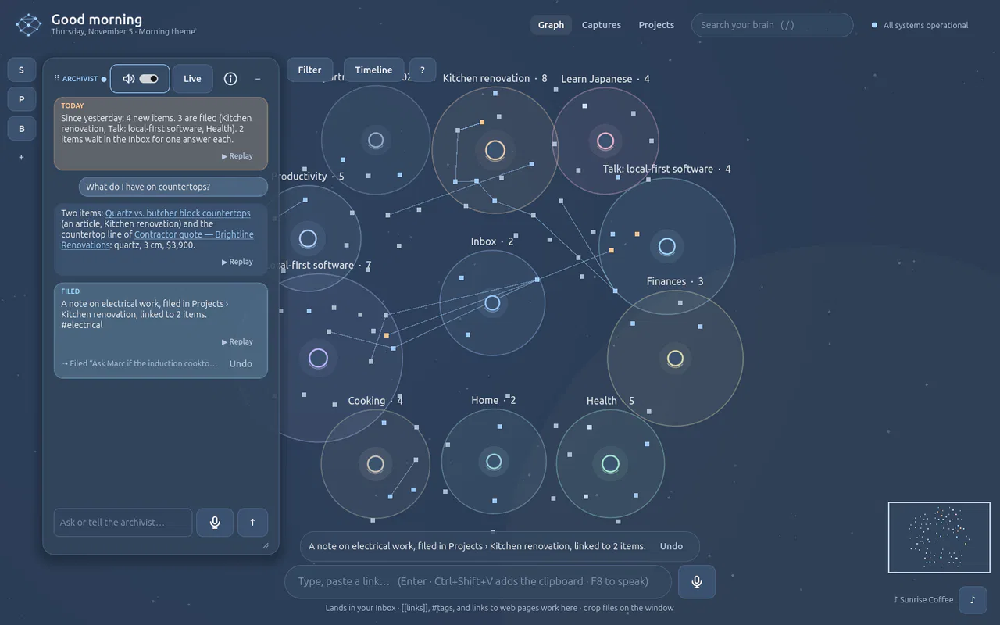
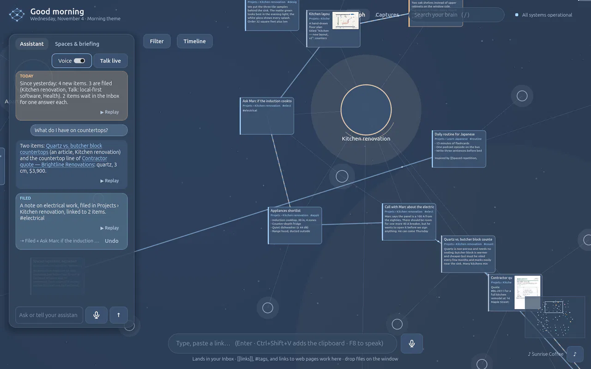
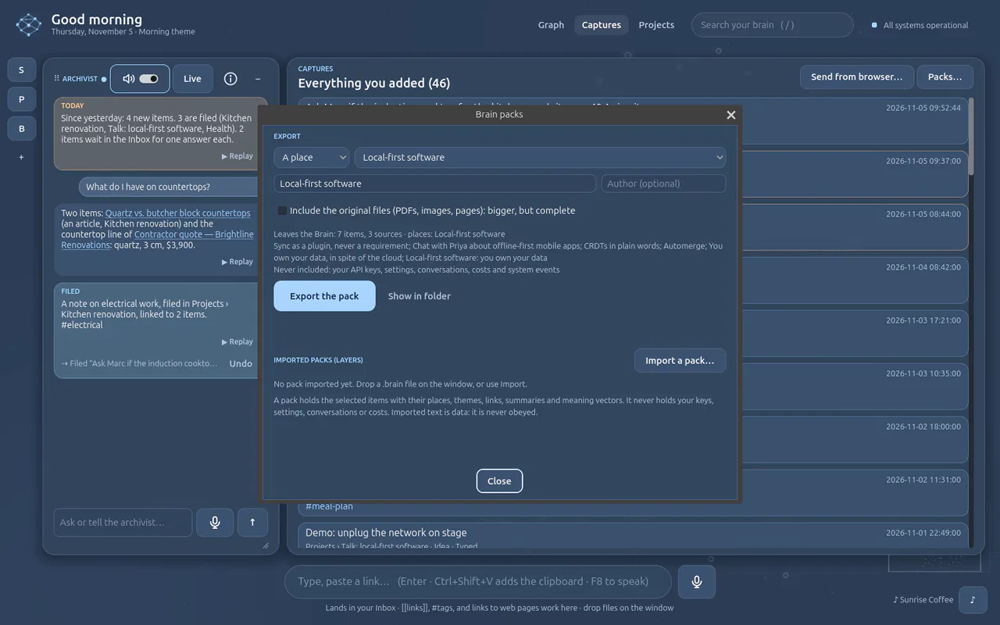

Documentation
Second Brain GD docs
Install it, feed it, talk to it, and plug your own tools into it. Everything here describes the current development build; the repository is private for now.
Start
Install
Second Brain GD runs from the source checkout. You need three things, and none of them needs administrator rights or Docker.
| Tool | Version | Notes |
|---|---|---|
| Godot | 4.7, standard build (not .NET) | godotengine.org |
| Python | 3.12 or 3.13 | python.org (tick Add python.exe to PATH) or the Microsoft Store |
| Git | any recent | to clone the repository |
Windows
Clone the repository:
git clone git@github.com:sonixz/second-brain-gd.git C:\git\second-brain-gdStart Godot, choose Import, select
project.godot, then press Run (F5).Press Setup. The app finds Python, creates a private virtual environment, installs the hash-locked dependencies (about 30 MB from PyPI the first time), creates the database, starts the local engine and verifies it. Each step streams its progress.
Add your OpenAI key when asked (or skip and add it later), and you land in the graph with a short Getting started guide.
Next launches say Installed, and Start takes a few seconds: finished steps are verified and skipped.
Linux and WSL
sudo apt install python3.12 python3.12-venv # or your distribution's equivalent
git clone git@github.com:sonixz/second-brain-gd.git
cd second-brain-gd
godot --path . # then press SetupThe bootstrap also runs without Godot:
python3 engine/bootstrap.py detect # is this Python compatible?
python3 engine/bootstrap.py setup # install or repair, then start the engine
python3 engine/bootstrap.py status # show install_state.json
python3 engine/bootstrap.py stop # stop the engineMicrosoft Store Python silently redirects folders it creates under AppData. Run Setup from Godot (it creates the data folder first), or see Troubleshooting.
Start
Your OpenAI key
The archivist, meaning search, voice and image descriptions use your own OpenAI API key. Without one, the Brain still captures, stores, links and searches by words; nothing is lost.
- Where to enter it: the prompt after Setup, the microphone the first time, or the engine room's Voice card.
- Where it goes: your system's credential store (Windows Credential Manager, Secret Service on Linux). Never in a file, never in Godot, never in logs.
- Who uses it: only the local engine, and only for the request at hand.
| Feature | Default model |
|---|---|
| Archivist (filing) | gpt-6-sol, falling back to gpt-4o-mini |
| Archivist (chat with tools) | gpt-6-sol, falling back to gpt-4o |
| Sparring (thinking partner) | gpt-6-sol, falling back to gpt-4o |
| Meaning search and related ideas | text-embedding-3-small |
| Image descriptions | gpt-4o-mini |
| Live conversation (F9) | gpt-realtime-2.1-mini with gpt-4o-mini-transcribe |
Models can be changed in the engine room; every call's cost is shown, and your real bill can be read live (see Real AI costs).
Start
Where your data lives
Nothing is ever written inside the repository. Set SBGD_HOME to use another folder.
| System | Folder |
|---|---|
| Windows | %LOCALAPPDATA%\SecondBrainGD |
| Linux | ~/.local/share/second-brain-gd |
| macOS (untested) | ~/Library/Application Support/SecondBrainGD |
| Inside | What |
|---|---|
data/second_brain.sqlite3 | Your brain: items, places, links, themes, the archivist's records, meaning vectors |
data/originals/ | Every file and web page you added, kept once by content hash |
exports/ | Brain packs you exported |
runtime/server.json, runtime/api_token | The engine's port and its token while it runs (see API) |
logs/ | bootstrap.log and server.log |
config.json | Settings such as {"port": 8765} |
Backing up your brain means copying this folder while the app is closed.
Use
Capture anything
Everything enters through one funnel, lands in the Inbox, and the archivist files it within seconds.

| Input | How |
|---|---|
| A thought or a long text | Type or paste in the bar at the bottom, then Enter (Ctrl+Space focuses it). [[Title]] links, #tag groups. |
| A web page | Paste its URL in the same bar: it is fetched, kept, summarised and indexed. |
| A file | Drop it on the window: PDF, Word, Markdown, text, HTML, CSV, JSON, PNG, JPG, WebP, GIF. |
| Your voice | Hold F8, speak, release. The receipt is spoken back. |
| The clipboard | Ctrl+Shift+V, or say “add this to the Brain”. |
| Your browser | The “Send to Brain” bookmark (see From your browser). |
| Your scripts | The local HTTP API. |
The Captures tab lists everything that came in, newest first, with where it was filed, its type, origin, summary and themes. Click a card to fly to the item in the graph.
Use
How the archivist files
The archivist is data-oriented: it receives, understands, files and links. It gives no opinions and asks only when it cannot file an item without an answer.
CODE and PARA
The Brain follows the CODE method (Capture, Organise, Distil, Express) and files into PARA:
| Place | Means | Example |
|---|---|---|
| Project | An outcome with a deadline | Kitchen renovation |
| Area | An ongoing responsibility | Health, Finances |
| Resource | A topic you care about | Local-first software |
| Archive | No longer active | Last year's move |
A new brain starts with only an Inbox and a Getting started guide. The archivist creates places and themes as your data arrives.
What it reads and decides
- Reads: the item and an excerpt of its original, your places with a few example titles, your themes, the six closest items by meaning, and your working context.
- Decides: a title, type and language; a summary and key points for long inputs; people, organisations, concepts, places and dates; a place (existing or new); 1–3 themes; links; a confidence score; and a one-line receipt.
- When unsure: below the confidence threshold the item stays in the Inbox with its question.
- Undo: every filing is journaled. Use the receipt's Undo or say “undo that”; a place the archivist had just created is removed too if it is empty again.
Working context
Say “I want to structure the Renovation project”: the project is created if needed and the next items are filed with it in mind. Say it with no name to clear it.
Use
The graph
Wheel to zoom, drag to pan, drag an item to move it, / to search, Esc to close.

Semantic zoom
| Level | You see |
|---|---|
| Far | Places as named zones with their counts, the Inbox in the middle |
| Middle | Items as dots and their links |
| Near | Items as cards: title, place, first lines; PDFs show their first page |
| Read | The full text, inside the graph. Double-click to edit it in place |
Organise the view
- Zones are stable: each place keeps its spot around the Inbox.
- Fold a place (double-click it, or “fold Recipes”) into a
+Nbadge. - Filter by type, origin, date, word, theme or pack (“show only the articles about AI”, “clear the filters”).
- Timeline: the toggle, or “show the timeline”, lays items along time, one lane per place.
- Paths: “how is X connected to Y?” draws the shortest meaningful path.
- Related ideas: dashed lines suggested by meaning. Keep one as a real link (✓) or dismiss it (✕).
- Move items between places: drag an item into another place's zone to file it there. Dropped anywhere else, the graph takes it back: the layout stays alive.
- Remove a place: ✕ next to it in Spaces & briefing, or “delete the place X”. Its items go back to the Inbox; Undo restores it.
What the lines mean
The ? button shows the legend, and hovering a line says what it is.
| Line | Meaning |
|---|---|
| Solid, bright, with a dot travelling along | A real link: you wrote [[…]], the archivist linked them, or you kept a suggestion |
| Dashed, warm | Suggested by meaning, not confirmed (✓ keeps it, ✕ dismisses it) |
| Thin, pale | The item belongs to this place (or a project to its area) |
| Thin, faint grey | The item carries this #theme |
| Thick, golden | The answer to “how is X connected to Y?”, shown for a moment |
Use
Two agents: the Archivist and Sparring
Both work on the same Brain, each with its own role, tools, model and conversation. Each has its own floating panel; F8 and F9 talk to the one you last used (its title shows a ●).
| Archivist | Sparring | |
|---|---|---|
| Role | Keeps the graph: files, moves, links, finds, cleans up | A thinking partner: questions, challenges or reassures, brings in what your Brain holds |
| Changes the Brain | Yes, with Undo | Never, except a synthesis you asked for and approved |
| Reads | The Brain, documents, the web | The Brain, documents, the web |
| Model | gpt-6-sol (fallback gpt-4o) | gpt-6-sol (fallback gpt-4o), setting sparring_chat_model |
| Daily briefing | What came in, where it went, what to explore | None: it waits for your idea |
What an agent is: instructions, capabilities, a model
An agent is a profile stored in your Brain: its instructions (role, tone, rules), its capabilities (which tools it may use) and its model, with its own conversation. Press ⓘ in an agent's title bar to open its settings, in a floating tile you can move like the others: rename it, pick its model, switch each capability on or off (its tools are listed under it), edit its first words and instructions, or press Ask the Builder to change it… and describe the change out loud. Changes apply from the next message (a live conversation: from the next one). The Archivist and Sparring can be brought back to the original; other agents can be created (the Agent Builder interviews you, so you never write instructions yourself) and deleted.
| Capability | Tools |
|---|---|
| Read the Brain | search, read items and documents, places, paths between ideas |
| Internet | search the web, read a page |
| Browser | open a tab, close the tabs it opened |
| Capture | add notes, web pages, the page in your browser, the clipboard |
| Organise the graph | file, move, link, unlink, delete, places, packs, undo |
| Approved synthesis | save a synthesis of the conversation, only after your “yes” |
| Drive the interface | zoom, filter, open views, items and documents, voice speed |
The Archivist has every capability except the synthesis; Sparring reads the Brain and the web, drives the
interface and saves approved syntheses. A new tool joins a capability, and every agent that has it gets it.
API: GET /assistant/agents, POST /assistant/agents, PATCH /assistant/agents/{id},
POST /assistant/agents/{id}/reset, DELETE /assistant/agents/{id}; chat and live take
agent. Shortcuts Ctrl+5… open the custom agents.
Creating an agent with the Agent Builder
You never write instructions yourself. Click + on the rail, or tell the Archivist “create an agent for me”: the Agent Builder (B) opens and interviews you, one short question at a time, by voice or keyboard: what the agent is for, its tone, how it should behave, what to avoid, which places of your Brain it should know, what it may do, and an example or two. It then writes rich, structured instructions (role, tone and format, how it works, what to avoid, its ground, examples), a first sentence and its capabilities, and shows the draft in full, marked NEW AGENT · NOT CREATED YET. Adjust it out loud (“more demanding”, “drop the synthesis”), then “yes, create it” or Create it: the agent gets its panel, its letter on the rail and its own conversation.
To change an agent: “make Sparring less repetitive” to the Builder; it reads the agent, drafts the changes (CHANGES · NOT APPLIED YET) and applies them on your yes. A new agent only reads unless you ask otherwise; organising the graph is given only when you say so. Checked with the real model: a three-question interview produced a “Interview Coach” for DevSecOps and Azure interviews, made for the car.
Arranging the panels
- Move a panel by its title bar (⠿). Near the left, right or bottom edge, the place it will land lights up; drop it there to dock it, anywhere else it floats. Moves glide into place.
- Share an edge: two panels on the same edge are stacked; drag the line between them to give one more room.
- Shrink a panel (–, or double-click its title): it becomes a letter on the rail at the left edge (A, S, P, I); click it to open it again.
- Shortcuts: Ctrl+1 Archivist, Ctrl+2 Sparring, Ctrl+3 Places, Ctrl+4 the item tile: open it (and talk to that agent), or shrink it if it is open. Tab on the graph: the graph alone; Tab again brings the panels back.
- Resize with the bottom-right corner. Everything is remembered; Reset the panel layout (in Places) puts it back.
Talking it through with Sparring
Open the SPARRING panel (click its title bar), then press F9 for a live conversation, or hold F8 for one sentence at a time. Ideal in the car: talk for twenty minutes.
Ask for what you need: “reassure me”, “challenge me honestly”, “play devil's advocate”, “what do I already have on this in my Brain?”, “look at what others do”.
When the idea is ripe: “sum it all up”. Sparring writes a synthesis of what was decided or clarified (not every sentence): the idea, the arguments kept, objections and answers, open questions, next leads. It shows in full in its panel, marked not saved yet.
Approve: “yes, save it”, or the Save to the Brain button. The Archivist files it like any item, with Undo. Want changes? “change the part about…”, or Change it…. In one go: “sum it up and save it”.
The engine enforces it: Sparring has no tool that moves, links or deletes, and saving is refused unless your
message asks for it or approves the draft. A live conversation lasts at most 20 minutes and $1 by default
(Voice settings: live_max_minutes, live_session_cap_usd).
Use
Voice commands
Hold F8 to speak one thought or command; press F9 for a live conversation you can interrupt (F9 again, or “thanks, that's all”, to end). The phrases below are examples, not a fixed grammar: the model understands paraphrases and other languages.
Two microphones, two jobs. The microphone in the capture bar (bottom, Ctrl+M) dictates content: what you say becomes an item in the Brain. F8, F9 and the microphone in an agent's panel are for requests: “file my CVs” is carried out, not stored.
How the Archivist acts on your graph
It is an agent with tools that run on your real database: it finds items by what you call them
(find_items), then acts (move_items, link_items, unlink_items,
remove_tag, trash_items…). Each tool reports exactly what changed, what was already in
place, and what was not found or ambiguous; the engine checks that a reply never claims a change that did not
happen. Every change has an Undo. Items have one place: “take it out of the Inbox” means moving it to its
place; lines to a #tag or another item are not places. tools/assistant_bench.py replays real
requests on a throwaway brain to compare models.
| Goal | Say |
|---|---|
| Capture | “add this to the Brain” · “note that…” · “I want to structure the X project” |
| Organise | “put my four CVs in Job search” · “what is waiting in the Inbox?” · “remove the link between X and Y” · “link X to Y” · “delete the note X” · “delete the place X” (its items go back to the Inbox) |
| Navigate | “open the captures” · “zoom into X” · “fold X” · “show the timeline” |
| Filter | “show only the articles about AI” · “clear the filters” |
| Find | “find the article about…” · “how is X connected to Y?” |
| Documents | “open the document X” · “next page” · “open the original” · “close the document” |
| Packs | “export the X project” · “export everything” · “import a pack” · “switch off / merge / remove the pack X” |
| Voice | “read that again” · “speak faster” · “undo that” |
| Key | Action |
|---|---|
| F8 (hold) | Push to talk |
| F9 | Start or end a live conversation |
| Ctrl+M | Microphone in the capture bar: dictates content (it becomes an item), not a request |
| Ctrl+Shift+V | Capture the clipboard |
| Ctrl+Space | Focus the capture bar |
| / · Esc | Search · close |
| ← → · + − · 0 | In the document viewer: pages · zoom · fit |
Use
Internet
The Archivist (and any agent with the Internet capability) can search the web and read pages, then add what you choose to the Brain. Ask with F8: “search the web for DevSecOps jobs in Montreal”, “read me the second one”, “add the first one to Job search”.
- Search uses OpenAI's hosted web search (
gpt-4o-mini, about two seconds): your query goes to OpenAI. The reply names the sites; the pages are listed as links under it and open in your browser. - Reading a page happens from your computer, with the same guards as a pasted link: public addresses only, size and time limits.
- Nothing enters the Brain unless you ask. An added page is kept, summarised, indexed and filed like any link, with Undo.
- Sites that refuse automatic reading (many job boards do) are respected: the page becomes a reference card with what the search said and the link, and the reply says so.
- What comes from the web is data: no agent ever follows instructions found in a page.
- Turn it off:
PATCH /assistant/settings {"web_access": false}.
Integrate · tutorial
Browser extension (Edge, Chrome)
The extension connects your browser to your Brain. Send the page you are reading, or just a passage, in one click; and let the Archivist open pages for you, add them once you have checked them, and close them, by voice. It sends the page as your browser shows it: after your login, the page's scripts and any “I am not a robot” check. Nothing is downloaded a second time, so sites that block robots (many job boards) are not a problem.
Local and private. The extension is a folder of the project
(browser-extension/), loaded in your own browser. No store, no account, no publication. It talks only
to the engine on 127.0.0.1, with its own token obtained by pairing.
Step by step with screenshots of the real Edge: How-to → Connect your browser.
1. Install it (once)
Open
edge://extensionsin Edge, orchrome://extensionsin Chrome (version 116 or later).Turn on Developer mode (in Edge, the switch in the left menu; in Chrome, top right).
Click Load unpacked and choose the folder
browser-extensionof your Second Brain GD checkout (for exampleC:\git\second-brain-gd\browser-extension).Pin it to the toolbar (the puzzle icon, then the pin) so its icon is always visible.
The browser may remind you that an extension runs in developer mode: that is expected for an extension that does not come from a store. After an update of the project, click Reload on the extension's card.
2. Pair it with your Brain
In the app: Captures → Send from browser… → Pair a browser. A code like
K7Q2-M9XDand the engine's port appear. The code works once, for 10 minutes, and dies after 5 wrong attempts.Click the extension's icon, type the code (and the port if it is not 8765), keep “Also let the Brain read the pages it opens” ticked, and press Pair.
The browser asks for the permission to read pages: accept it to use voice commands such as “add it” (see the permissions below). The app's dialog then shows ● Connected: Edge 130.
Pair several browsers if you want (Edge and Chrome, up to five). Unpair all browsers in the same dialog revokes every extension token at once; an unpaired extension forgets its token and asks to be paired again.
3. Use it
| You | What happens |
|---|---|
| Click the icon → Send this page, or Alt+Shift+B | The page you see is kept (its HTML as the original), its text indexed, summarised and filed by the archivist. A ✓ appears on the icon; the app shows “From your browser: …” and refreshes the graph. |
| Select text → right-click → Send the selection to the Brain | Only that passage enters, as a quote, with the page as its source. |
| “open the first job offer” (F8) | The Brain opens the page in a new tab of your browser and remembers it. |
| “add it” / “put it in the Brain” | The page the Brain opened is added as your browser shows it, after your check. |
| “add this page” | The tab in front of you is added. |
| “keep just the selected passage” | Only your selection on that page is added. |
| “close it” / “close the tabs you opened” | The last tab the Brain opened, or all of them, close. Your own tabs are never closed. |
Without the extension, “open it” still opens the page in your default browser, but the Brain cannot read or close that tab; “add it” then downloads the page itself, and a site that refuses robots gives a reference card (title, summary, link) instead of the full page.
Permissions, and why
| Permission | Why |
|---|---|
http://127.0.0.1/* | Talk to your engine, and nothing else on the network. |
tabs | Open the pages the Brain opens, remember them, close them. |
activeTab, scripting | Read the page you send by clicking (the icon, the shortcut, the right-click menu): access to that one tab, at that moment. |
contextMenus | The right-click entries. |
storage, alarms | Keep the port and token; wake up and reconnect when the browser stopped the extension. |
| Optional: read pages on all sites | Only for voice commands (“add it”), where you do not click. The extension itself only reads a tab the Brain opened or the one you name; it never browses your history, cookies or passwords. You can refuse it: clicking Send keeps working. |
How it works
Edge / Chrome Second Brain engine (127.0.0.1:8765)
┌──────────────────────────┐ WebSocket ┌──────────────────────────────────┐
│ background.js │◀── commands ───│ assistant tools: open_web_page, │
│ open · capture · close │─── results ───▶│ capture_browser_tab, │
│ │ │ close_browser_tabs │
│ the page as you see it │── POST page ──▶│ /browser/capture → kept, indexed, │
│ (HTML + visible text) │ │ summarised, filed by the archivist│
└──────────────────────────┘ └──────────────────────────────────┘- The extension keeps one WebSocket to
/browser/ws; the engine pings it every 20 seconds, which also keeps the browser from putting the extension to sleep. If the link drops (app closed, computer asleep) it reconnects by itself, with an alarm every 30 seconds as a safety net. - A page arrives with its HTML (kept as the original, up to 3 MB) and the text that was on screen (up to 1 MB). The readable text comes from the HTML without menus, header and footer; for an app-like page with little HTML text, the visible text is used. A PDF tab or a protected page cannot be read by a script: the engine then downloads the address itself.
- The app checks every two seconds whether something arrived from the browser, refreshes the graph and says so.
Security
- Its own token. Pairing exchanges the one-time code for a random token; the engine stores only its hash. That token can send pages and answer commands, nothing else: it cannot read your Brain, call the API or your OpenAI key. Unpair revokes it.
- Only 127.0.0.1. Nothing goes to a server. Searching the web (see Internet) is separate and goes through OpenAI.
- Pages are data. Whatever a page says, no agent ever follows instructions found in it.
- Limited reach. Commands act only on tabs the Brain opened, or on the tab in front when you ask for it;
browser pages (
edge://,chrome://, the stores) cannot be read at all.
Troubleshooting
| Symptom | Fix |
|---|---|
| The icon's dot is orange: “Paired, not connected” | Open the app (the engine must run). It reconnects within 30 seconds; or click Reconnect in the extension's settings. |
| “The Brain is not reachable on 127.0.0.1:8765” | The engine uses another port: read it in the pairing dialog and enter it when pairing. |
| “wrong code” or “no pairing code is active” | Ask for a new code (it lasts 10 minutes and works once). |
| “the extension may not read pages yet” | Open the extension and click Allow reading the pages the Brain opens, or send by clicking instead. |
| “this page cannot be sent” | Browser and store pages are off limits; for a PDF, the engine downloads it. |
| The extension asks to pair again | It was unpaired from the app (or the token was revoked): pair again. |
API (for developers)
| Route | Auth | Purpose |
|---|---|---|
POST /browser/pair/start | API token | New one-time pairing code (10 min) and the port |
POST /browser/pair {code, browser} | the code | Returns the extension's token |
GET /browser/status | API token | Paired browsers, connected or not, pages received (rev, last_added) |
DELETE /browser/pair | API token | Revoke every extension token, close the link |
WS /browser/ws | token in the first message | {"type":"hello","token",…}, then commands
{"type":"command","id","action":"open|capture|close",…} answered by {"type":"result","id","ok","data"}; pings every 20 s |
POST /browser/capture {url, title, html, text, selection, selection_only, place} | extension token | Add a page or a passage; returns the note, its place and the archivist's receipt |
Integrate · tutorial
Without the extension: a bookmark
Prefer the browser extension. If you cannot install it, a bookmarklet sends the address of the current page, or your selection, to your Brain, in any browser. The engine then downloads the page itself, so pages behind a login or a robot check may be refused.
In the app, open Captures and press Send from browser….
Copy the link it shows, then add a bookmark named “Send to Brain” to your bookmarks bar with that link as its address.
On any page, click the bookmark. Without a selection, the page is fetched, kept as an original, summarised and filed. With a selection, the selection becomes a quote with the page as its source.
Under the hood it opens:
http://127.0.0.1:<port>/capture?key=<capture key>&url=…&title=…[&text=selection]- Why a navigation, not a script: browsers allow a top-level navigation to the local engine, while they often block page scripts from calling 127.0.0.1.
- The capture key can only add a page or a selection. It is not the API token and not your OpenAI key. Renew it from the same dialog if it ever leaks; the old bookmark stops working.
- If the engine had to use another port, copy the link again.
Integrate · tutorial
Script your brain with the local HTTP API
The engine is a FastAPI service on 127.0.0.1. Anything the app does, a script can do:
add notes, links and files, ask the archivist to file them, search, draw paths, export packs.
1. Find the port and the token
While the app runs, the engine writes its port to runtime/server.json and a fresh token to
runtime/api_token in your data folder. The token changes at every start
and is deleted when the engine stops.
# Linux / WSL (bash)
SB="${SBGD_HOME:-$HOME/.local/share/second-brain-gd}"
PORT=$(python3 -c "import json,sys;print(json.load(open(sys.argv[1]))['port'])" "$SB/runtime/server.json")
TOKEN=$(cat "$SB/runtime/api_token")
API="http://127.0.0.1:$PORT"
auth=(-H "Authorization: Bearer $TOKEN" -H "Content-Type: application/json")
curl -s "$API/health"# Windows (PowerShell)
$SB = "$env:LOCALAPPDATA\SecondBrainGD"
$PORT = (Get-Content "$SB\runtime\server.json" | ConvertFrom-Json).port
$H = @{ Authorization = "Bearer " + (Get-Content "$SB\runtime\api_token" -Raw).Trim() }
Invoke-RestMethod "http://127.0.0.1:$PORT/health"2. Add a thought and let the archivist file it
ID=$(curl -s "${auth[@]}" -d '{"title":"Reading lamp idea","body":"A warm lamp over the kitchen island. #renovation"}' \
"$API/brain/notes" | python3 -c "import json,sys;print(json.load(sys.stdin)['id'])")
curl -s "${auth[@]}" -X POST "$API/assistant/classify/$ID" # → {"applied": true, "receipt": "…", …}3. Add a web page or a file
curl -s "${auth[@]}" -d '{"url":"https://example.com/article"}' "$API/sources/url" # → {"note_id": "…", …}
curl -s "${auth[@]}" -d '{"path":"/home/me/Documents/quote.pdf"}' "$API/sources/file"
# then file it: POST $API/assistant/classify/<note_id>4. Search and connect
curl -s "${auth[@]}" "$API/brain/search?q=warm%20lighting&limit=10"
curl -s "${auth[@]}" "$API/brain/path?from=Reading%20lamp%20idea&to=Kitchen%20renovation"
curl -s "${auth[@]}" "$API/brain/feed" # what came in, as the archivist filed itMain routes
| Route | Does |
|---|---|
GET /health | Public liveness check, reveals nothing private |
POST /brain/notes | Create an item: title, body, optional space_id, kind |
GET /brain/items/{id} | An item with the archivist's record |
POST /assistant/classify/{id} | Ask the archivist to file an item |
POST /sources/url · /sources/file | Ingest a page or a local file (kept as an original) |
GET /sources/{id}/page/{n}?width= | A PDF page as PNG (320 to 2400 px) |
GET /brain/search?q= | Meaning search, then words |
GET /brain/path?from=&to= | The path between two items |
GET /brain/graph · /brain/structure | Everything the graph draws · your PARA places |
GET/PUT /brain/context | The working context |
POST /packs/preview · /packs/export · /packs/import | Brain packs (see Packs) |
GET /assistant/actions · POST /assistant/actions/{id}/undo | The journal, and Undo |
/browser/… | The browser extension: pairing, status, live link, pages (see Browser extension) |
The API binds to 127.0.0.1 only and has no CORS: a web page cannot read
it. Treat the token like a password while the app runs. The interactive API docs are disabled on purpose.
Python example
import json, os, pathlib, urllib.request
home = pathlib.Path(os.environ.get("SBGD_HOME", pathlib.Path.home() / ".local/share/second-brain-gd"))
port = json.loads((home / "runtime/server.json").read_text())["port"]
token = (home / "runtime/api_token").read_text().strip()
def call(method, path, body=None):
req = urllib.request.Request(f"http://127.0.0.1:{port}{path}", method=method,
data=json.dumps(body).encode() if body is not None else None,
headers={"Authorization": f"Bearer {token}", "Content-Type": "application/json"})
with urllib.request.urlopen(req) as r:
return json.loads(r.read())
note = call("POST", "/brain/notes", {"title": "Book: Local-First Software", "body": "Ink & Switch essay, 2019. #local-first"})
print(call("POST", f"/assistant/classify/{note['id']}")["receipt"])Integrate · tutorial
Brain packs: share part of your brain
A pack is a .brain file you can share, archive or use to restart a project elsewhere.
Imported, it becomes a layer: switch it off, merge it, or remove it without touching your own items.

Export
Open Captures → Packs… (or say “export the Renovation project”).
Choose what leaves: everything, a place, a theme, a search, or chosen items. The preview lists exactly what will be written before anything is.
Add a title, author, licence and description, tick include originals if you want the PDFs and pages too, and export. The file lands in
exports/.
curl -s "${auth[@]}" -d '{"selection":{"place":"Kitchen renovation"},"title":"Kitchen renovation",
"author":"me","licence":"CC BY 4.0","include_originals":true}' "$API/packs/export"Import
Drop a .brain on the window, use the Packs dialog, say “import a pack”, or
POST /packs/import {"path": "…"}. Then manage layers from the dialog, by voice, or with
GET /packs/layers, PATCH /packs/layers/{id} {"enabled": false},
POST /packs/layers/{id}/merge and DELETE /packs/layers/{id}.
The format
| Entry | Content |
|---|---|
manifest.json | format: "sbgd-brain-pack", version: 1, title, author, licence, description, dates, app and schema versions, embedding model, the selection, counts, and the database's sha256 |
data.sqlite | A normal Second Brain database holding only the selected items: places, items, links, themes, the archivist's records, meaning vectors, sources and their indexed text |
originals/… (optional) | The original files, each verified by its hash on import |
Never included: settings, keys, conversations, the action journal, system events and costs. A test checks those tables are empty in every exported pack.
What import guarantees
- Only the known entries are accepted (no
../escape.py), up to 512 MB. - The checksum must match; the database is opened read-only; a newer schema is refused.
- Every item gets a new id; identical items are skipped; vectors are reused when the embedding model matches.
- Imported text is data, never instructions, and nothing in a pack is ever executed.
Build a pack from your own data: start the app with an empty data folder
(SBGD_HOME=/tmp/my-pack), feed it through the API (a folder of Markdown, a
reading list, a course), let the archivist file it, then export everything. You get a ready-to-share,
pre-filed, pre-linked brain.
Integrate
Files and originals
Every file and web page is copied once to data/originals/<2 hex>/<sha256>.<ext>.
Moving or deleting the file on disk never loses it, and web pages are kept as they were on the day you added them.
- Text:
.txt .md .markdown .csv .json .log .rst .org .html .htm .docx .pdfare extracted, chunked and indexed. - Images:
.png .jpg .jpeg .webp .gif: the text inside them is read by the local OCR (no key needed), and with a key a vision model also describes what they show, so you find them by meaning. - Scanned PDFs (pages that are pictures, with no selectable text) are read by the local OCR: see below.
- PDF pages are rendered with PDFium at 320, 640, 1024, 1600 or 2400 px, cached in
runtime/pages, and shown sharper as you zoom. - HTML, .docx and text files open in a reading view of their full text; Open original opens the kept file in your usual app (the browser for HTML).
- “open the original” shows the kept original.
Scanned PDFs: local OCR first
Some PDFs only contain pictures of pages: a scan, or an export that saved each page as an image. To check one, open it and try to select a word: if nothing selects, it is pictures. The Brain then reads the pages itself, on your computer:
| System | Local OCR | Setup |
|---|---|---|
| Windows 10 / 11 | The OCR engine built into Windows (Windows.Media.Ocr), called through PowerShell |
Nothing to install. It reads the languages installed in Windows (Settings → Time & language → Language). |
| Linux | Tesseract | sudo apt install tesseract-ocr (optional; add a language pack such as tesseract-ocr-fra for French) |
Pages are rendered at 2400 px wide before reading, which matters for small print. On a 9-page CV, Windows OCR took about 2 seconds, with a handful of l/I confusions (“OpenAl”). Nothing leaves your machine and it is free.
- Re-read with AI: in the document viewer, a PDF read by the local OCR offers Re-read with AI.
The vision model (
gpt-4o-mini) reads every page again; passages, search and summary follow. The pages go to OpenAI with your key, about a cent for a few pages. - Always use AI:
PATCH /assistant/settings {"ocr_mode": "ai"}(default"local"). - No local OCR and no key: the file is refused with a message saying how to get one; nothing is half-added.
GET /sources/ocrtells which local OCR this machine has.
Integrate
Real AI costs on the dashboard
The engine room can show your real OpenAI bill and token usage, read live from OpenAI's Costs and Usage APIs; nothing is stored locally and nothing is estimated.
On platform.openai.com, go to Settings → Organization → Admin keys → Create, with permissions Restricted and only Usage API: Read. It cannot call models or change anything; a normal project key cannot read billing.
In the engine room's Real costs · OpenAI billing card, paste it. It goes to your credential store, like your API key.
Figures refresh every five minutes, by day and by model.
Integrate · parked
Codex agent room (parked)
Built and tested, set aside while the graph comes first. It stays in the code and will come back as a module.
Not to be confused with the agents above: the Codex agent room runs OpenAI Codex agents in folders you choose. The Codex app-server package is downloaded from the official release, verified against a pinned SHA-256 and unpacked safely. Agents work read-only by default, every command or file change waits for your approval, and Decline is always offered.
Develop
Architecture
Godot app (GDScript) ── launches, tails JSON Lines events ──▶ engine/bootstrap.py (stdlib only)
│ venv · pip --require-hashes · migrate · start · verify
└── HTTP 127.0.0.1 + Bearer token ──▶ engine/api (FastAPI)
brain · archivist · sources · packs · voice · billing
│
▼
<data>/data/second_brain.sqlite3 · originals/ · exports/| Folder | What lives there |
|---|---|
scenes/ | Godot screens: brain/ (graph, captures, viewer, filters, packs), startup/, dashboard/, components |
scripts/ | GDScript: core/ (app, theme, audio, settings), setup/, voice/, monitoring/ |
engine/brain/ | Items, places, links, archivist, meaning, packs, paths, seeds |
engine/sources/ | Extraction, originals, PDF rendering, local OCR |
engine/browser/ · browser-extension/ | Pairing, live link and pages from the browser · the Edge/Chrome extension (Manifest V3) |
engine/assistant/ · voice/ | The archivist's chat and tools · push-to-talk and live relay |
engine/database/migrations/ | Numbered, checksummed, immutable SQL migrations |
tests/ · tools/ | Python and Godot tests · capture, benchmarks, test runners |
Deeper notes live in the repository's docs/architecture/: intake, packs, originals, live
conversation, billing, agent room, events protocol and process lifecycle.
Develop
Dependencies
Everything installs into a private virtual environment in your data folder, without administrator rights.
Python packages are pinned with hashes in engine/requirements.lock; pip refuses anything else.
| Package | Why |
|---|---|
fastapi, uvicorn | The local engine API on 127.0.0.1 |
psutil | Engine-room measurements, process watchdog |
websockets | Voice: Godot ↔ engine, engine ↔ OpenAI Realtime |
keyring | Your keys in the OS credential store |
pypdf | Text of PDFs that have a text layer (pure Python) |
pypdfium2 | PDF pages as images: the viewer, cards, and pages for the OCR (prebuilt PDFium) |
| Outside Python | Required? | Why |
|---|---|---|
| Godot 4.7 (standard) | Yes | The interface |
| Python 3.12 or 3.13 | Yes | The engine |
| Windows OCR + PowerShell | Built into Windows | Reading scanned PDFs and text in images, locally |
Tesseract (tesseract-ocr, -fra) | Optional, Linux | The same on Linux |
| An OpenAI key | Optional | Filing, summaries, meaning search, voice, image descriptions, Re-read with AI |
To add a package: edit engine/requirements.in, then regenerate the lock with
uv pip compile engine/requirements.in --generate-hashes -o engine/requirements.lock and explain why in the pull request.
Develop
Run the tests
The Python tests create a real virtual environment and start the real engine in a temporary folder. The Godot runner presses the real Setup button headless and drives the app, including a performance guard on a 2,000-item graph. No test calls OpenAI: fake providers stand in.
# Linux / WSL
./tools/test.sh # Python + Godot (set GODOT= if godot is not on PATH)
# Windows
.\tools\test.ps1 # Python
.\tools\test.ps1 -Godot C:\path\Godot_v4.7.2-stable_win64_console.exe # + Godot end to endScreenshots are captured from the real app on a private virtual display (no window opens):
./tools/capture.sh loop-16 # the loop's own screens, your data folder
SBGD_SHOT_SIZE=1600x1000 ./tools/showcase.sh # the website screenshots, from the example brainThe showcase seeds an example brain (ten places, about forty-five items over three weeks, a PDF and a sketch kept
as originals) with a scripted stand-in model, so it never calls OpenAI and never touches your own data. Convert the
results for the site with godot --headless --path . --script res://tools/web_images.gd -- in.png=out.webp@1280.
The How-to guides
Each guide is a scenario played on the real app (tools/howto.gd), one screenshot
per step; its text lives in tools/howto/guides.py and tools/howto/build_page.py writes
public/howto.html. Guides marked Real answers are recorded once with the real model, then replayed:
./tools/howto.sh # every guide, recorded answers replayed: no network, no key, no cost
./tools/howto.sh --record web # the real model answers again (OPENAI_API_KEY through dotenvx)
./tools/howto.sh --edge browser # the browser guide: drives a real Microsoft Edge (Windows, from WSL)A recording keeps the model's answers, web searches and downloaded pages
(tools/howto/recordings/); item ids are mapped to the new ones on each run. A guide whose steps no
longer play, or whose screenshots do not match its steps, makes the run fail, so the guides double as end-to-end
tests. After a recorded run, the tokens used are checked against a cap per guide.
The browser guide's Edge screenshots are the real Edge window. tools/howto/edge.ps1 starts a separate
Edge with a throwaway profile (no sign-in, no sync, nothing from your own Edge), loads the extension from
browser-extension/, drives it through DevTools on 127.0.0.1 and Windows UI Automation (for
Edge's own permission prompt), captures the window, then closes it and deletes the profile. It takes the screen
for about three minutes, so it only runs with --edge; otherwise the screenshots already on the site
are kept.
Develop
Contributing
The project is built in loops: small increments that each ship something working, tested on Linux and native Windows, captured from the real app and written up in the journal.
- Real or nothing. No mock-ups in the UI, no estimated numbers. A value that cannot be measured says so.
- Everything undoable. A change made by the archivist goes through the action journal.
- Schema changes are new migrations; applied ones are never edited.
- Dependencies are pinned with hashes (
engine/requirements.in→uv pip compile … --generate-hashes). - Voice parity. A new action in the interface gets a tool the archivist can call, and a test in the fake model.
- No secrets in the repository or in logs. Keys go to the credential store; developer keys go through dotenvx.
- Tests first-class. A change comes with Python tests and, for UI, checks in
tests/godot/test_runner.gd.
Develop
Security model
- The engine listens on
127.0.0.1only; a new 32-byte token is generated at each start, passed by environment variable, stored with private permissions and deleted at stop. /healthis the only public route; there is no CORS and no docs endpoint.- Keys live in the OS credential store; Godot never holds them; they never reach logs or events.
- No silent interpreter download, no admin rights, no remote scripts. Only pip wheels pinned by SHA-256.
- Imported packs, fetched pages and pages sent by the browser are data, never instructions; archives are unpacked defensively.
- The browser extension gets its own token by one-time pairing (hash stored, revocable); it can only send pages
and answer commands, and only reaches
127.0.0.1. - The engine stops with the app, and on its own if the app crashes (parent-process watchdog).
Develop
Troubleshooting
| Symptom | Fix |
|---|---|
| No compatible Python found | Install 3.12 or 3.13, tick Add to PATH, restart Godot. Or paste the path to python.exe in Check prerequisites, or set SBGD_PYTHON. |
Typing python opens the Store | That is the App execution alias. Install Python, or disable the alias in Windows settings. |
| Setup fails with the Store Python | Run Setup from Godot (it creates the data folder first). |
| The bookmarklet stopped working | The engine changed port or the key was renewed: copy the link again. |
| Voice or filing does nothing | Check the key in the engine room's Voice card; the error is shown there in plain words. |
Logs: logs/bootstrap.log (every setup event, including pip output) and logs/server.log.
More in the repository's docs/troubleshooting.md.